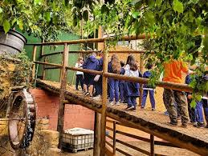

Relato de Extensão (III ENSIPEX)
Aplicação de Metodologias Ativas nas Escolas
A LACASE utilizou o ciclo de ação-reflexão-ação com 80 alunos do ensino fundamental e médio. O método demonstrou ser superior a palestras isoladas, promovendo a troca de ideias e o entendimento de que a preservação dos animais silvestres está ligada à preservação do meio ambiente.
Acessar o Relato de Caso (PDF) 📥